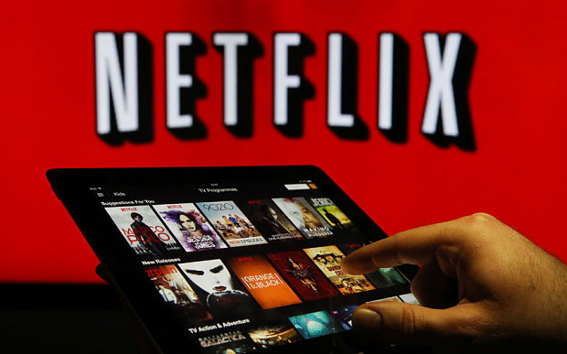
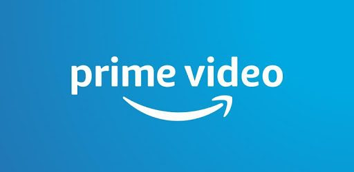
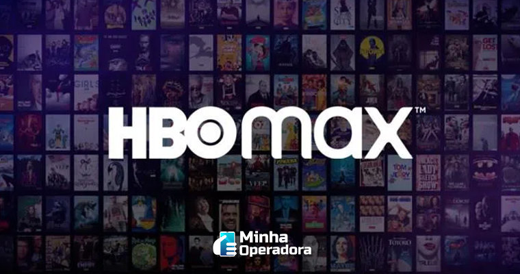
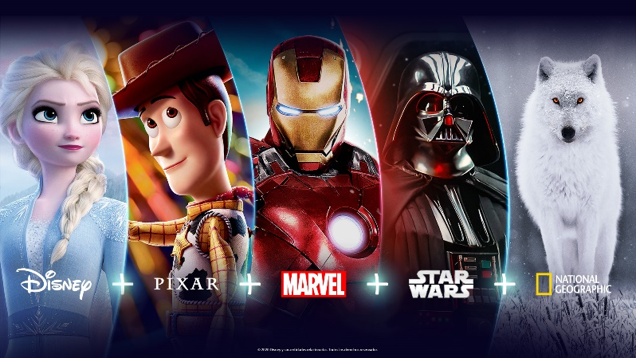

O que é uma Plataforma de Streaming?
Streaming é a tecnologia que permite consumirmos filmes, séries e músicas em qualquer lugar é bastante popular e acessível e vem ajudando a combater a pirataria.
O streaming é a tecnologia de transmissão de dados pela internet, principalmente aúdio e vídeo, sem a necessidade de baixar o conteúdo. O arquivo, que pode ser um vídeo ou uma música, é acessado pelo usuário online. O detentor do conteúdo transmite a música ou filme pela internet e esse material não ocupa espaço no computador ou no celular. Algumas plataformas oferecem o download de faixas, apenas para assinantes.
******************************************************************************************************************************
Quais os Benefícios de uma Plataforma de Streaming?
Um dos principais benefícios do streaming é a comodidade: através de uma conta (que pode ser gratuita ou paga, depende da plataforma), você tem acesso a um acervo de filmes, séries, músicas e outros conteúdos, que seriam mais difíceis de acessar legalmente de forma individual, dados os custos de cada mídia física separadamente como CDs e DVDs. Pelo mesmo movito, é uma ferramenta anti-pirataria, que joga com a carta da facilidade de uso e preços acessíveis, contra a distribuição ilegal online.
******************************************************************************************************************************
Quais as melhores Plataformas de Streaming?
Netflix
O Netflix é um dos maiores serviços de streaming de vídeos no mundo.Atualmente, o serviço conta com um catálogo de milhares de filmes e séries de TV que podem ser acessados através de várias plataformas, como notebooks, tablets, smartphones, videogames, e claro, pela TV. Bastante famoso, o Netflix foi lançado em 1997 com entregas através dos correios nos Estados Unidos. Agora, o serviço é considerado um dos maiores no ramo. O serviço já conta com mais de 60 milhões de usuários em todo o mundo.
ACESSO AO NETFLIX

Amazon Prime Vídeo
O Amazon Prime Video é o serviço de streaming de vídeo da Amazon que está incluso no pacote do Amazon Prime. Semelhante à Netflix, tem séries, filmes e conteúdos infantis no catálogo, desde exclusivos até produções licenciadas. Amazon. Há aplicativos para Android, iOS (iPhone e iPad), videogames (PS4 e Xbox One), Smart TVs e também pode ser assistido pela web (no navegador).
ACESSO AO AMAZON PRIME VÍDEO

Globo Play
O Globoplay, serviço de streaming da TV Globo, vem fazendo sucesso no Brasil. É uma plataforma que transmite ao vivo a programação da emissora pela internet — com acesso via navegador ou pelo celular. Com modelo freemium, o serviço pode ser acessado gratuitamente tanto no Android e no iOS quanto no computador, por meio do globoplay.com. Donos de smart TVs também tem acesso ao app, que oferece programação gratuita e também paga, com séries exclusivas.
ACESSO AO GLOBO PLAY
.png)
HBO MAX
O HBO Max é o serviço de streaming de filmes e séries do grupo WarnerMedia, detentor do canal de TV por assinatura HBO. A plataforma ainda não foi lançada no Brasil, mas possui datas e preços definidos para assinantes.
O catálogo do serviço reuni toda a programação do canal de TV, somada a outras atrações do grupo WarnerMedia. Isso significa que a plataforma disponibilizará temporadas de programas como Game of Thrones, Euphoria, Friends e The Big Bang Theory, além de produções originais e títulos de outros canais, como TNT e Cartoon Network.
ACESSO AS DATAS E PREÇOS DO HBO MAX

Disney Plus
O Disney Plus (ou Disney+) é a plataforma de streaming anunciada pela Walt Disney Company. O serviço reunirá filmes e séries com produções originais e de outras plataformas, como a Fox+, e abrigará títulos famosos como os da franquia de Star Wars, da Marvel e Os Simpsons. O protótipo da interface do programa tem grandes similaridades com o software da Netflix. O diferencial do novo serviço é que, apesar de oferecer as mesma ferramentas (como ausência de anúncios e a opção de assistir online e offline), o aplicativo contará com um acervo ilimitado de conteúdos disponíveis para download. Com um portfólio amplo e com grande variedade de produções clássicas e inéditas, o aplicativo busca atrair clientes da faixa etária infanto-juvenil.
ACESSO AO DISNEY PLUS

******************************************************************************************************************************
******************************************************************************************************************************
******************************************************************************************************************************
O QUE É UM AGENTE CONVERSACIONAL?
Os agentes conversacionais podem ser definidos como sistemas projetados para receber um parâmetro do usuário e oferecer uma resposta apropriada, de forma a simular uma conversa humana (TEDESCO; BARROS, 2016)
- O que é AIML
- Oq é AIML
- AIML
- O que é netflix?
- Oq é netflix?
- netflix
- O que é Amaozn Prime?
- Oq é Amazon Prime?
- Amazon Prime
- O que é Globo Play?
- Oq é Globo Play?
- Globo Play
ACESSO AO AGENTE CONVERSACIONAL